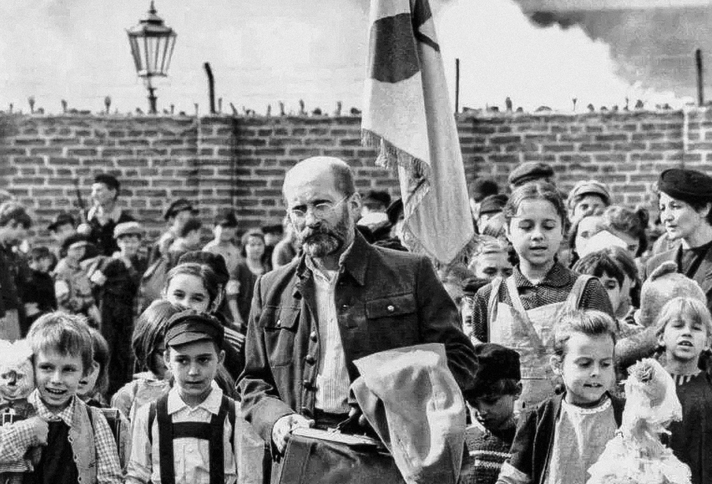
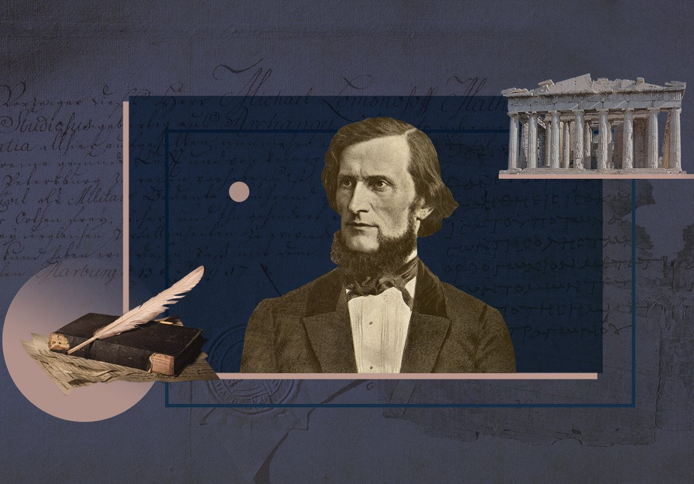
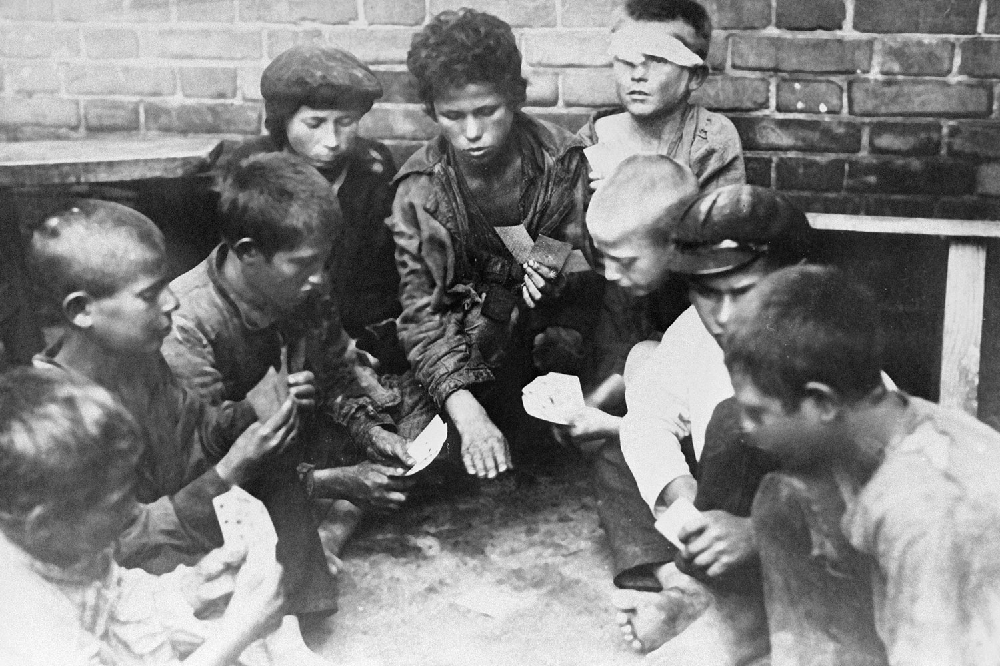
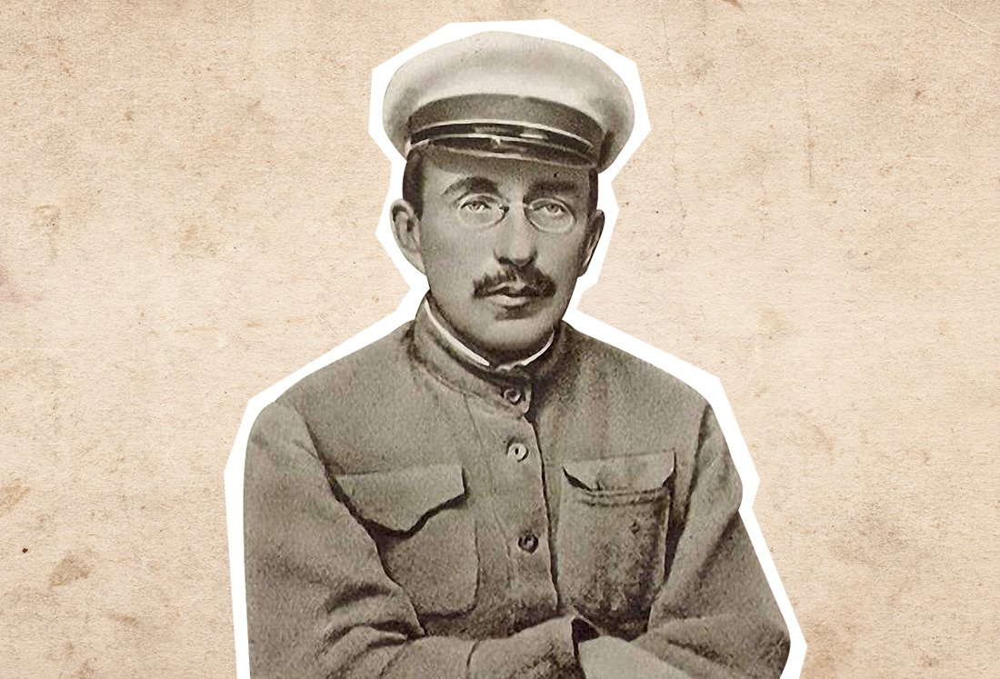
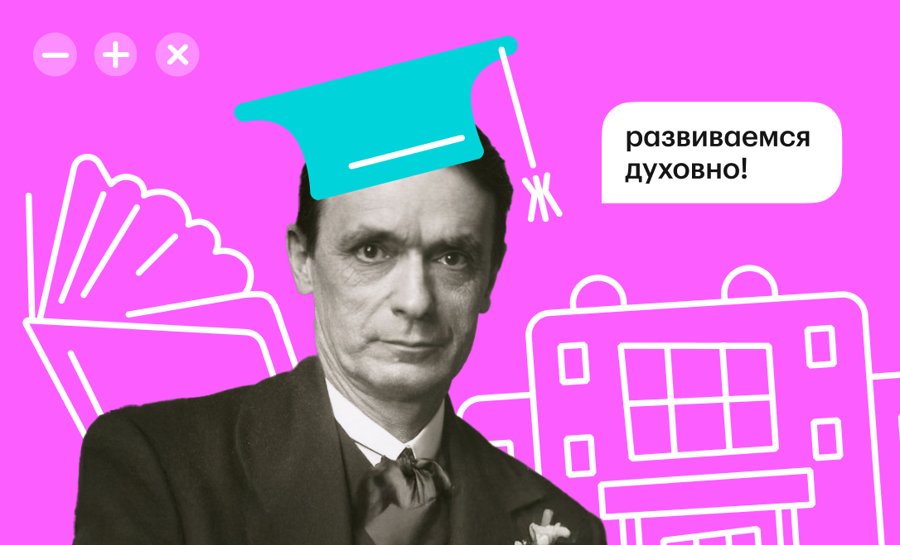
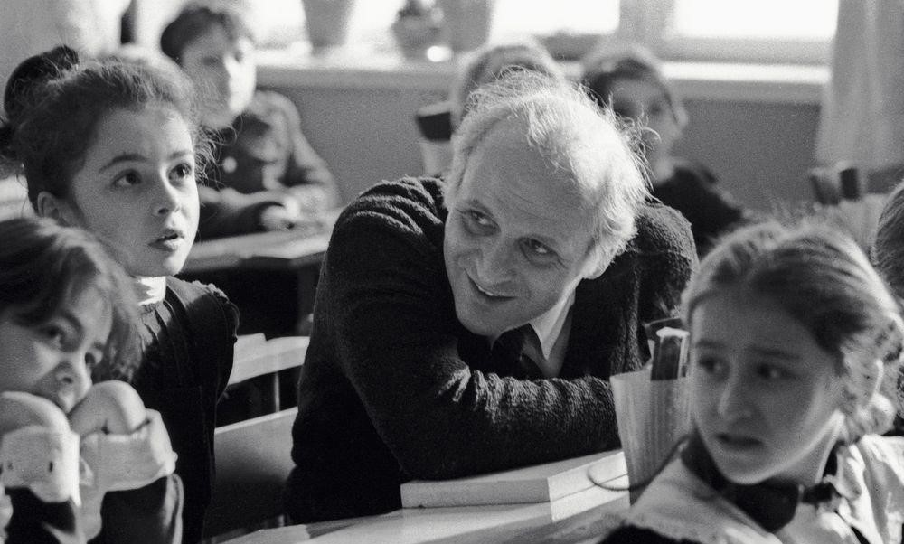
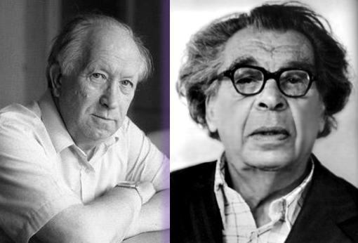
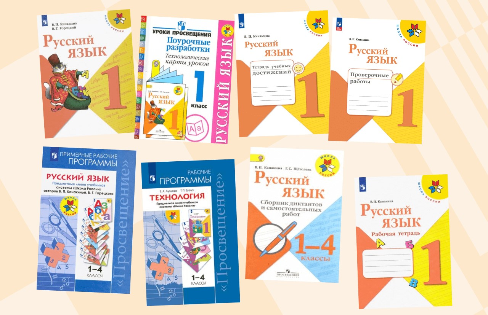

Польский педагог посвятил всю свою жизнь детям. Он сформировал свои принципы педагогики, которые стали основой для систем образования в нашей стране. В своей книге «Как любить ребенка» он подчеркивал, что невозможно полюбить ребенка, не видя в нем индивидуальность.

Учёбу ради учёбы Ушинский критиковал, утверждая, что образование должно иметь конкретную цель — сформировать правильное понимание жизни, которое сделает человека полезным себе и обществу.

Выдающимся педагогом того времени считается Виктор Николаевич Сорока-Росинский. Талантливый педагог и психопатолог плодотворно применял новые подходы к обучению, воспитанию и перевоспитанию подростков на основе изучения психологических особенностей каждого воспитанника.

Макаренко был убеждён, что воспитывать можно только своим примером. Учитель может быть суровым, но если он горит своим делом и действует уверенно — ученики пойдут за ним. И наоборот: будь он сколь угодно приветлив и мил, но дела своего не знает — от учеников заслужит только презрение.

В своих лекциях и эссе Штайнер рассказывал о том, как можно развивать умственное развитие ребенка посредством образования, которое должно основываться на понимании человеческого развития и способах познания окружающего мира.
Вальдорфское образование известно тем, что обеспечивает практическую основу для работы с детьми, позволяя им найти свое творческое начало и стать свободными от стереотипов людьми, которые могут думать и рассуждать самостоятельно.

В школу Шалва Александрович попал совершенно случайно, желая помочь финансово своей семье. В школе с его приходом закипела пионерская жизнь. Во всей этой круговерти школьной жизни Шалва Амонашвили был не над ребятами, а вместе с ними.
Образовательная система «Школа 2100» - первый и единственный в России и странах СНГ современный опыт создания целостной образовательной модели, последовательно предлагающей системное и непрерывное обучение детей от младшего дошкольного возраста до окончания старшей школы.

Теоретические работы Эльконина и экспериментальные исследования Давыдова привели к созданию программы для начальных классов, в которой учёба сочетается с развитием личности.
Цель системы — научить детей самостоятельно ставить задачи, определять методы их решения и анализировать результат. Обучение организовано так, чтобы школьники смогли самостоятельно поставить задачу, предложить способы её решения, а затем критически оценить то, что получилось.

УМК «Школа России» действует с 2001 года. В ноябре 2010 года издательство «Просвещение» получило положительные экспертные заключения Российской академии наук и Российской академии образования об эффективности данной системы и соответствии требованиям ФГОС.
Система учебников программы «Школа России» отличается тем, что ориентирована на развитие у учащихся универсальных учебных действий (УУД), формирующих основу умения учиться и обеспечивающих активное включение детей в учебный процесс по всем школьным предметам.